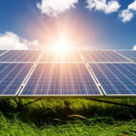

Jakie wymogi powinna spełniać instalacja fotowoltaiczna?
Obecnie instalacja fotowoltaiczna wykorzystywana jest zarówno w wielkiej skali, w postaci farm fotowoltaicznych, jak i w skali mikro, gdzie moduły fotowoltaiczne generują energię elektryczną w indywidualnych gospodarstwach domowych.
Aby panele słoneczne działały bez zarzutu a do tego mały zapewniona odpowiednia ochronę, powinny zostać zaprojektowane i wykonane zgodnie z obowiązującymi przepisami, normami oraz rozwiązaniami technicznymi.
Projekt
Podstawowym elementem inwestując w fotoogniwa jest przygotowanie dobrego projektu instalacji PV, gdyż błędnie wykonany może nieść za sobą konsekwencje w postaci niskiej wydajności bądź przewymiarowania instalacji.Każdy projekt powinien być dostosowany do konkretnych warunków technicznych i zapotrzebowania budynku na energię elektryczną, dlatego powinna wykonać go osoba o konkretnych uprawnieniach:
- uprawnienia budowlane do projektowania w specjalności instalacyjnej w zakresie sieci, instalacji, urządzeń elektrycznych i elektroenergetycznych
- certyfikat wystawiony przez Prezesa Urzędu Dozoru Technicznego w zakresie systemów fotowoltaicznych.
Stosowane materiały
Moduły fotowoltaiczne
Instalacja fotowoltaiczna posiada je w podstawie, służą one bowiem do bezpośredniej zmiany energii ze słońca na energię elektryczną w postaci prądu stałego. Zastosowane moduły powinny posiadać następujące parametry:
- krzemowe ogniwa
- sprawność nie mniejszą niż 16 procent
- moc maksymalną modułu w warunkach STC: nie mniejsza niż 275 Wp (dla modułów 60–ogniwoowych)
- wartość bezwzględną temperaturowego wskaźnika mocy: nie większa niż 0,45%/°C
- odporność na PID: zgodnie z normą ICE 62804–1:2015 lub równoważna
- tylko dodatnią tolerancję mocy
- wytrzymałość mechaniczną: nie mniejsza niż 5 400 Pa
- spadek mocy modułów po pierwszym roku pracy: nie większy niż 3%.
Falowniki – instalacja fotowoltaiczna
Są najważniejszym elementem instalacji. Do zadań falownika należy zmiana prądu stałego produkowanego przez moduły na prąd przemienny, zsynchronizowany z siecią energetyczną.
Falowniki zastosowane w instalacjach fotowoltaicznych powinny spełniać następujące parametry:
- typ: beztransformatorowy
- sprawność euro: nie mniejsza niż 96%
- stopień ochrony: min. IP65
- współczynnik zakłóceń harmonicznych prądu: poniżej 3%
- sposób chłodzenia: naturalna konwekcja lub wymuszona wentylatorowa
- posiadane dowolnego protokołu komunikacji oraz bezprzewodowej komunikacji
- gwarancję na wady ukryte: nie krótsza niż 10 lat
- możliwość modyfikacji współczynnika mocy cosφ: 0,90 niedowzbudzenie do 0,90 przewzbudzenie.
Optymalizatory mocy
To urządzenie montowane przy modułach fotowoltaicznych lub w puszkach połączeniowych modułów, których zadaniem jest wymuszanie pracy w punkcie mocy maksymalnej na poziomie pojedynczego modułu. Zastosowanie optymalizatorów mocy pozwala osiągnąć wyższe uzyski energii z instalacji – od kilku do nawet kilkudziesięciu procent.
Optymalizatory powinny one posiadać następujące parametry:
- współpraca z dowolnym falownikiem
- sprawność maksymalna: nie mniejsza niż 98%
- gwarancja na optymalizator mocy: nie mniej niż 10 lat
- zastosowane optymalizatory mocy nie powinny ograniczać sposobu montażu modułów fotowoltaicznych.
Konstrukcja wsporcza
Niezależnie od lokalizacji, panele fotowoltaiczne powinny być przymocowane do konstrukcji wsporczej. Jej rodzaj należy dostosowywać indywidualnie do pokrycia dachowego, lokalizacji oraz dodatkowo istniejącej infrastruktury. Konstrukcja wsporcza powinna posiadać następujące parametry:
- być dedykowana do miejsca montażu (odpowiednia konstrukcja do posadowienia na gruncie, dachu płaskim i skośnym)
- wykonana z aluminium lub stali nierdzewnej
- sposób montażu dedykowany do istniejącego pokrycia dachowego, zgodnie z wytycznymi producenta konstrukcji.
Ochrona przeciwporażeniowa
Panele PV bez prawidłowej ochrony przeciwporażeniowej stanowią potencjalne zagrożenie dla użytkowników instalacji. Ochrona przeciwporażeniowa powinna być realizowana przez:
- zachowanie odległości izolacyjnych
- izolację roboczą
- szybkie samoczynne wyłączenie w układzie sieciowym
- projektowanie instalacji zgodne z przepisami budowlanymi w zakresie ochrony przeciwporażeniowej oraz wymogami normy PN–IEC–6364.
Ochrona przeciwprzepięciowa
Systemy fotowoltaiczne muszą być zabezpieczone przed przepięciem i sprzężeniami. Są wtedy chronione przed przepięciami pochodzącymi z sieci energetycznej, przepięciami i sprzężeniami wywołanymi uderzeniem pioruna oraz innymi przepięciami powstałymi w instalacji. Ochrona przeciwprzepięciowa powinna zostać zapewniona przez:
- usytuowanie ograniczników przepięć zawsze jak najbliżej chronionego obiektu. Dodatkowo oprócz miejsca lokalizacji, należy wziąć pod uwagę czy budynek ma urządzenie piorunochronne LPS
- ogólne zasady doboru typów zabezpieczeń SPD w systemie PV, które należy zweryfikować na etapie realizacji instalacji.
Ochrona odgromowa
Instalacja fotowoltaiczna
Zainstalowanie systemu fotowoltaicznego na dachu zwiększa ryzyko przedostania się prądu piorunowego do wnętrza budynku w przypadku wyładowania bezpośrednio w panel, dlatego więc należy stosować ochronę odgromową instalacji fotowoltaicznej, która powinna być realizowana w następujący sposób:
- W przypadku obiektu wyposażonego w instalację odgromową, panele fotowoltaiczne należy umieścić w przestrzeni chronionej przy zachowaniu odpowiedniego odstępu izolacyjnego, który uniemożliwi wystąpienie przeskoków iskrowych pomiędzy elementami instalacji odgromowej oraz metalowymi elementami chronionego urządzenia.
- W przypadku obiektu bez instalacji odgromowej panele oraz konstrukcję nośną należy uziemić. Przewód uziemiający powinien iść najkrótszą drogą do uziomu. Jako przewody uziemiające należy stosować przewody o przekroju nie mniejszym niż: 50 mm2 – Fe, 25 mm2 – Al oraz 16 mm2 – Cu.
Uruchomienie urządzeń
Przed uruchomieniem urządzeń należy wykonać pomiary:
- stanu izolacji kabli zasilających
- rezystancji uziemienia
- inne wymagane przepisami badania i pomiary.
Z przeprowadzonych pomiarów należy sporządzić odpowiednie protokoły będące podstawą do uruchomiania i oddania do eksploatacji objętych projektem instalacji.
Przyłączenie do sieci elektroenergetycznej
Projektując instalację fotowoltaiczną, należy sprawdzić zgodność założeń projektowych z kryteriami przyłączeniowymi oraz wymaganiami technicznymi dla mikroinstalacji i małych instalacji przyłączanych do sieci dystrybucyjnej niskiego napięcia.